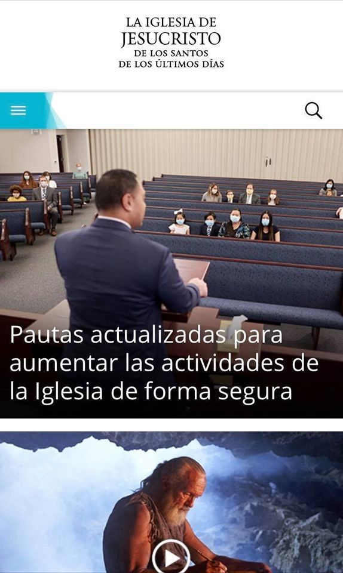

PARC: Contrast
Church of Jesus Christ of Latter-Day Saints
Since opposites attract the contrast in the color and the way that the church website makes its elements and its titles or descriptions are a good example of contrast. Plus, the size of the letters are according to the size of the images and screen size making it more readable.
PARC: Proximity
Youtube
Proximity is used to create connections between different elements that belongs to the same group. In thi example provided, YouTube has made the elements that pertains to the same link be close together so that the user can know that they those descriptions are from the image above it.
White Space and Clean Design
BYU-Pathway Worldwide
There are many parts of this webpage that remains empty like the silence between the notes in a musical performance. This communicates distinction and relationship. Tne right ammount of white space here makes the website looks clean, elegant, and sophisticated.